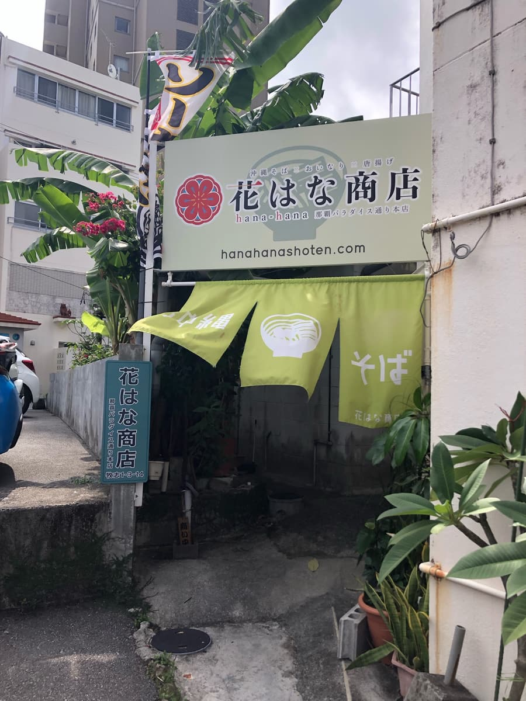
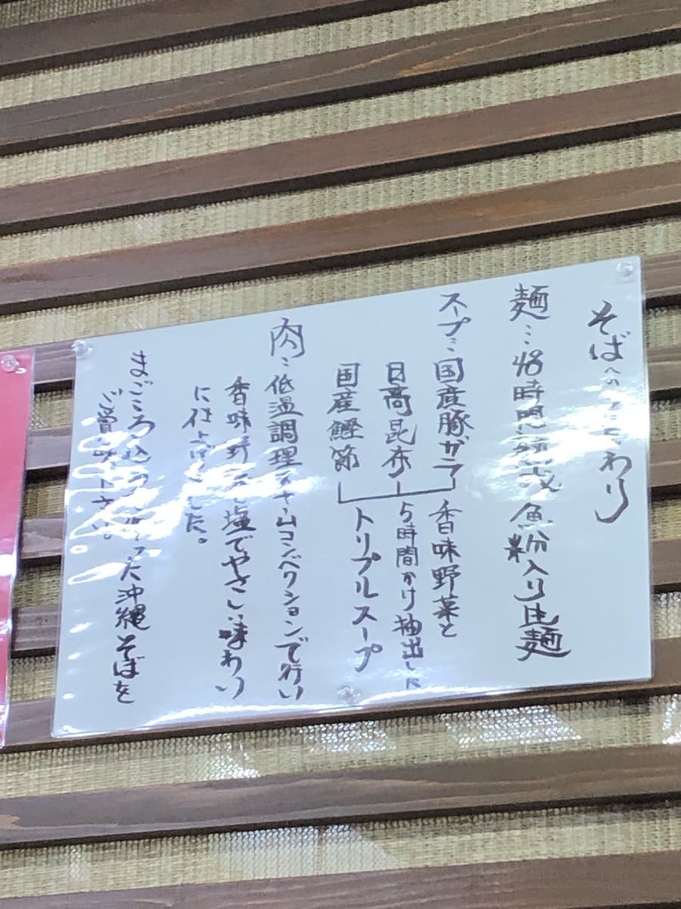
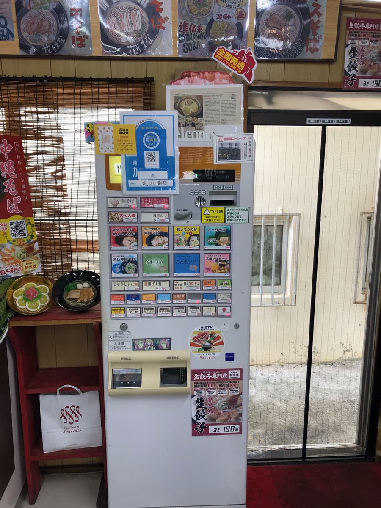
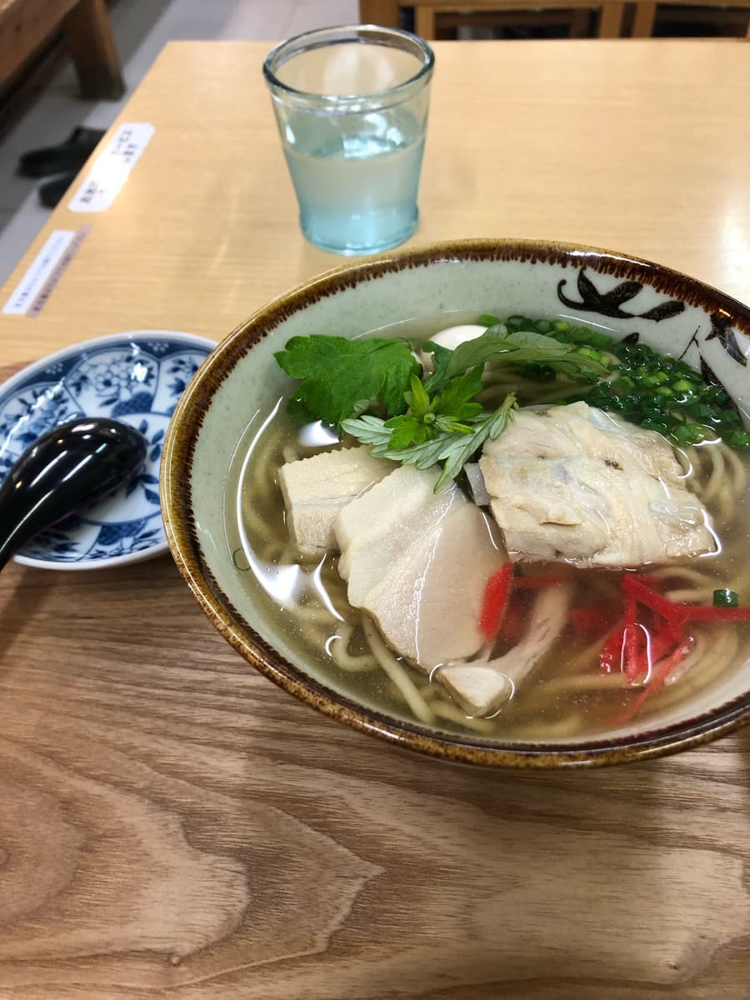
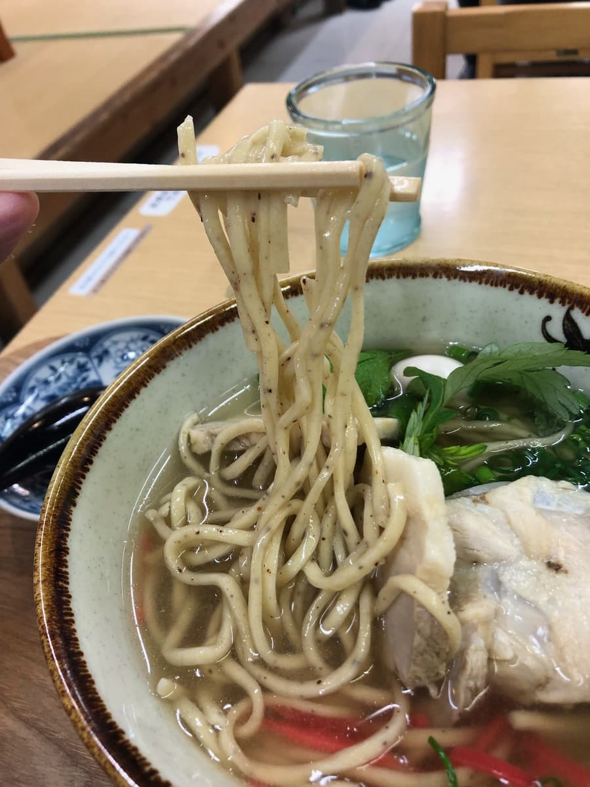

2023年11月吃的。这家店是「第13届冲绳面集章活动（2023.10.1～2024.2.29）」的参加店，是我去的第16家／共34家😊


店内贴着坚持面条的说明文字。另外，我上网查到说明是「独家调配的面粉与鱼粉揉入后熟成48小时。是嚼劲强、顺口的特制生面。」，感觉好好吃呢😁
关于水也有这样的说明：『使用2种抗菌活性碳的净水器，保留原水中所含的矿物质成分并去除游离残留氯。再以过滤能力高的软水器去除高度氯。将安心安全的「美味的水」用于汤头、煮面、饮用水，全部都使用。』水也很讲究，感觉很好吃呢。
汤头据说是用国产猪骨、日高昆布、国产柴鱼片与香味蔬菜花5小时萃取而成。这也看起来很好吃😊
肉也是低温烹调，做出温和的味道。这点也和其他店不同，令人期待ｗｗ

在售票机点了集章手册上介绍的「综合面」。

先喝一口连水都很讲究的猪骨、昆布、柴鱼综合高汤。综合高汤中的柴鱼高汤味较强的温和味道。就是很普通的好吃🙂

接着吃加了鱼粉的特制生面的中细直面。面条感觉嚼劲稍强、偏硬。
让我想起「石古夫」和「兄弟小」的生面。感觉相似，嚼劲较强又偏硬，所以可能会因人而有喜好之分。
配料的三层肉、排骨可能因为是低温烹调，呈现其他店没有的白色。一般来说很软，味道是清爽系。照片中只拍到一点点，不过放了2颗鹌鹑蛋，这个配料是其他店没有的感觉。
评分（9分/15分）：就是很普通的好吃。面条嚼劲强又偏硬，可能会因人而有喜好之分。
※店面没有停车场，所以要停在周边的投币式停车场。
面：★★★☆☆（3）
汤头：★★★☆☆（3）
配料：★★★☆☆（3）